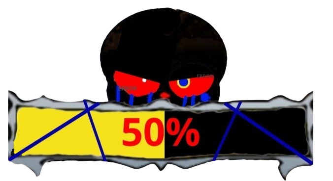

Previous Page
Undertale : Last Corridor
Error
Sa
ns
Starting Cutscene
Error Is Muttering To Himself Before Noticing the charas
" Y-YOU, WHY AND HOW DID YOU GET IN HE- "
"... ,Doesn't Matter Change Of Plans, I'll exterminated All Of You here and now"
Information
* You Check,
Error
Sa
ns
ATK ??? DEF ???
* It Seems We Accidentally Stumbled Onto His World
* Focus Partner, These Strings Are Not Ordinary
Data
An AU Destroyer as he sees Alternative Universes as an anomaly
Karmic Retribution : No
Stamina : 215
Stamina Gain Rate : The Same As Normal AfterTale
Unique death Animation Where if the Charas Died By Error Instead Of Their Soul Shattering It Would Be Grabbed By The Strings And Brought Up To The Strings Above
Theme
( Or You Can Check It Out
Here
)
(I Made It Loop So You Can Enjoy Hearing It While Reading This)
Passive
Stress Bar
If
Error
Sa
ns
Is Hit, He will lose less stamina but gain 6% Stress bar, if the stress bar hits max Error Will Rage And Force The Chara To leave The Anti Void. Basically the charas team win
(Hit While Moving = 5 -> 3 Stamina, Hit While standing still = 15 -> 7 Stamina)
Error Will Gain An Iframe And A SpeedBoost For 1s Every Hit
( The SpeedBoost Has A 6s Cooldown )
in order to lose some stress bar you will have to Hit/damage charas with attacks
(5hp damage = lose 3% stressbar)
0% To 49% Bar Visual

50% To 79% Bar Visual
80% To 100% Bar Visual
Unpredictable Strings
Occasionally every 10 - 15s A "!" Would Appear for 1.5s Before Strings Would Drop Down, if A Chara Is Hit Their Walk Range Would be limited and if they try to walk away, The Chara would be pulled back to the strings.
( The Strings Takes 2 Hits Of Damage Before Being Destroyed )
Aerial Variants
If You Jumped while using a move at the same time the aerial Variants will be used
Lore
Error
was erasing an au timeline but when he was about to go into the anti-void he encountred ink.
ink would proceed to tell
Error
about 3 Charas That have Been going around destroying aus, at first
Error
did not care but when he heard some of the original undertale timelines Has been destroyed,
Error
proceed to keep the 3 anomalies in check by erasing them
Available Attacks
1st move( Bone Pull )
(10 stamina cost)
(CD : 6s)
2nd move ( Error Blasters )
(15 stamina cost)
(CD : 12s)
3rd Move ( Soul Crush )
(8 stamina cost)
(CD : 9s)
Normal Variant
Summon A Circle Of Bones On Your Cursor,The Bones Will Summon On Top Of The Map And
Error
Will Pull it Down With Strings
( Damage : 8Hp Per Bone )
Summon 2 Blasters Per 1 Chara randomly around the map and shoots a short burst beam Autoaimed at charas
( Damage : 12Hp )
Error
Glows Red for 0.8s Before releasing strings infront of him,
if the strings succesfully hit a chara,
Error
Would Proceed to grip his hand and crush the Charas soul with the attached strings
( Can Hit Multiple Chara's )
( Slows Chara for 1.5s )
( Damage : 10hp )
Aerial Variant
Error
Would Proceed To Grab The Strings Above the map and Launches Himself With The String To Where You are facing leaving a trail of bones launching downwards As
Error
Moves
(6Hp Per Bone)
Error
Would Grab The Strings Above And Summons 2 blasters Beside him Shooting a Short-Burst Beam at the mouse Cursor, after the blaster despawn error would then drop down
( Damage : 18Hp)
Error
Would Summon Portals Above the charas and shoots out Strings , if hit the charas would be lifted for 2.5s
Available Attacks
4th Move ( Blaster Rush )
(12 stamina cost)
(CD : 14s)
5th Move ( String Assault )
(10 stamina cost)
(CD : 8s)
6th Move ( Glitch Hop )
(15 stamina cost)
(CD : 25s)
Normal Variant
Error
Summon A Blaster,
Error
would Proceed To Wrap It Around With Strings And Throws It At Your Mouse Cursor, if a chara is hit They will be knocked back
( Damage : 10Hp )
Error
Would Bring out his strings and launches them Foward attacking similar like a Whip, if hit a Chara, they Would Have Their Abilites Disabled For 4s
( Damage : 8 )
Creates A Portal To Where
Error
Is Standing And Creates An Exit To Where the mouse cursor is.
Sans/Charas Can Access The Portal, Press Again To close The Portal Instantly
( The Portal Will Automatically Close After 10s Have Passed )
( The CD Will Start After The Portal Despawns )
Aerial Variant
Error
Would Grab The Strings Above Then Proceed To Summon A Blaster And Wrapped it Around With Strings To Throw it At The Mouse Cursor, If A Chara Is Hit They Would Get Slowed For 3s
( Damage : 12Hp )
Error Would Shortcut Above And Send Strings To Your Mouse Cursor With Quick Speed
( Damage : 10Hp )
Error
Summons A Portal Below Him And Jumps In Becoming invisible And Gains A Huge Speedboost for 1.5s
( While
Error
Is In This State He cannot be attacked And He also can't attack )
7th Move ( Stringed Puppets )
( Stamina Usage : 30 )
( CD : 65s )
Error
Would Create A Portal Near The Charas And Force Them Into It With Strings
Charas would Proceed to fight A Random Sanses That
Error
Could Control
( Basically Turning You Into These Sanses For The Moment )
( While Controlling These Sanses
Error
Will Not Gain Stamina Until He Gains Back Control )
( Click The sanses Image To Go To Their Respective Pages )
Forces The Chara To A Portal,And Fight These Sanses In Their World
(All Have Equal Chances)
Swap Sans
Fell Sans
Outer Sans
Previous Page